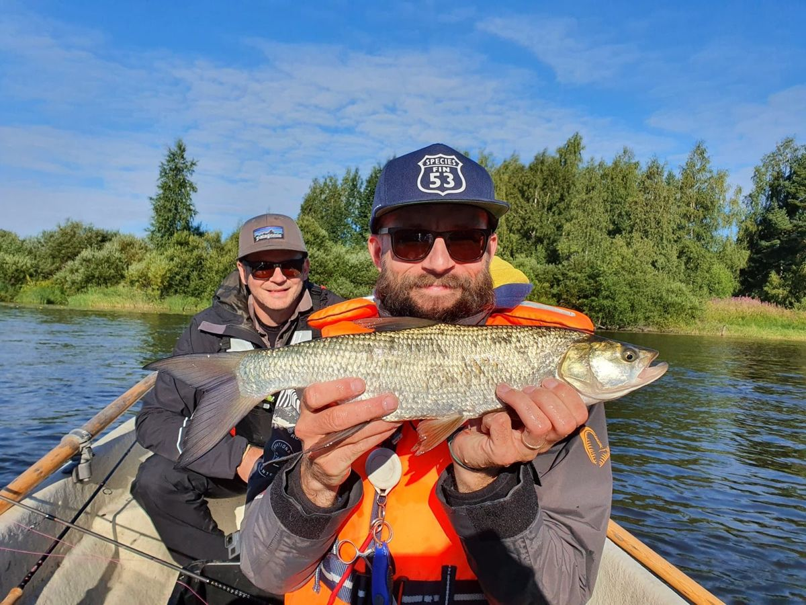
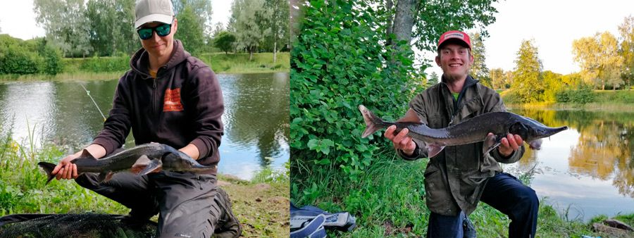
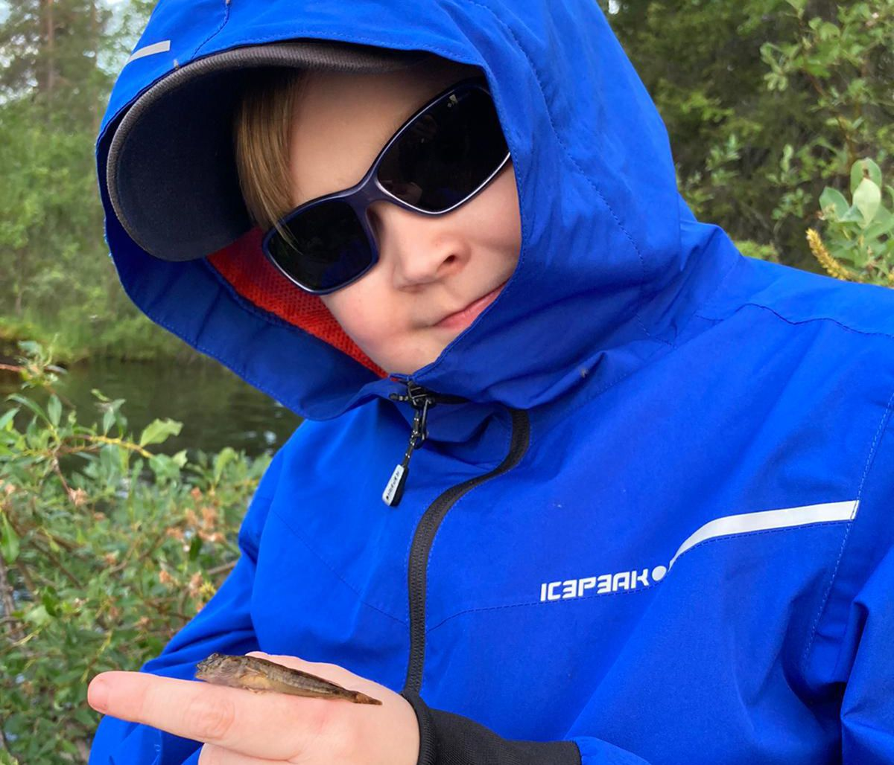
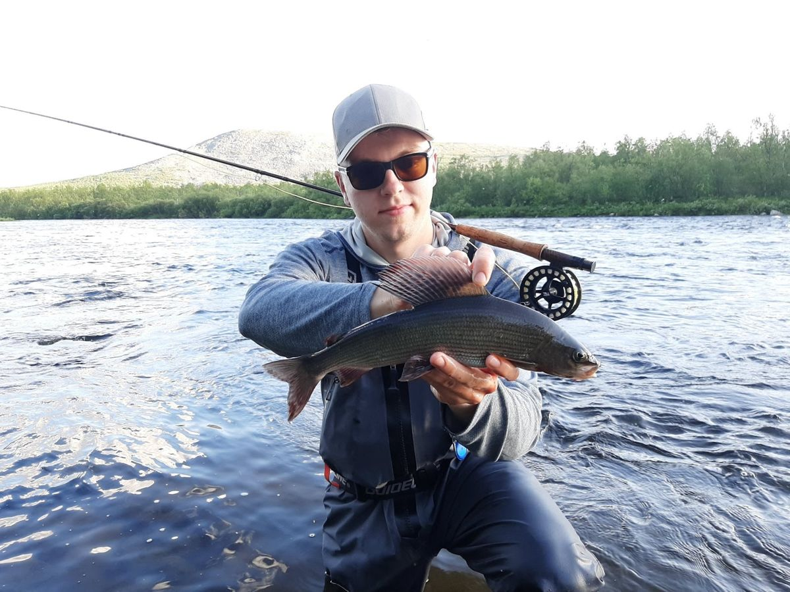
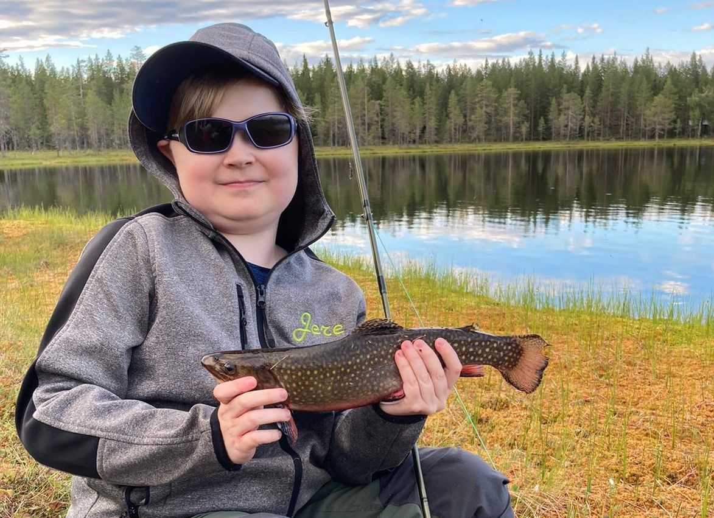
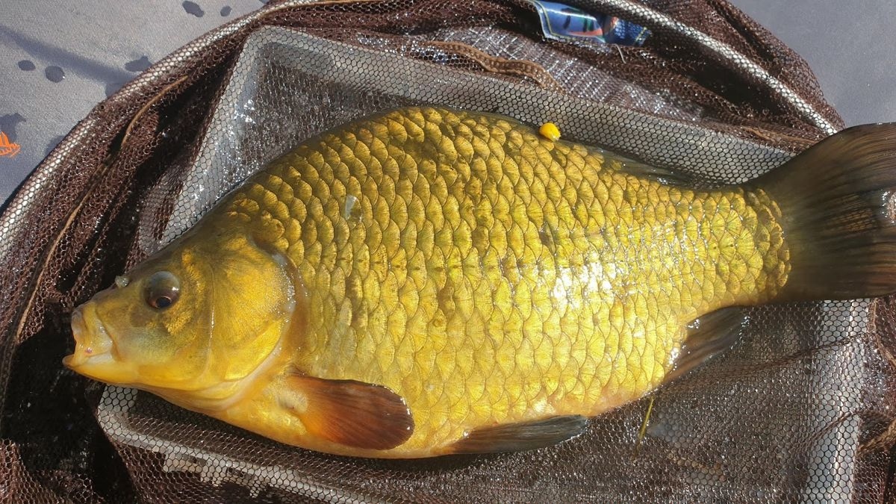
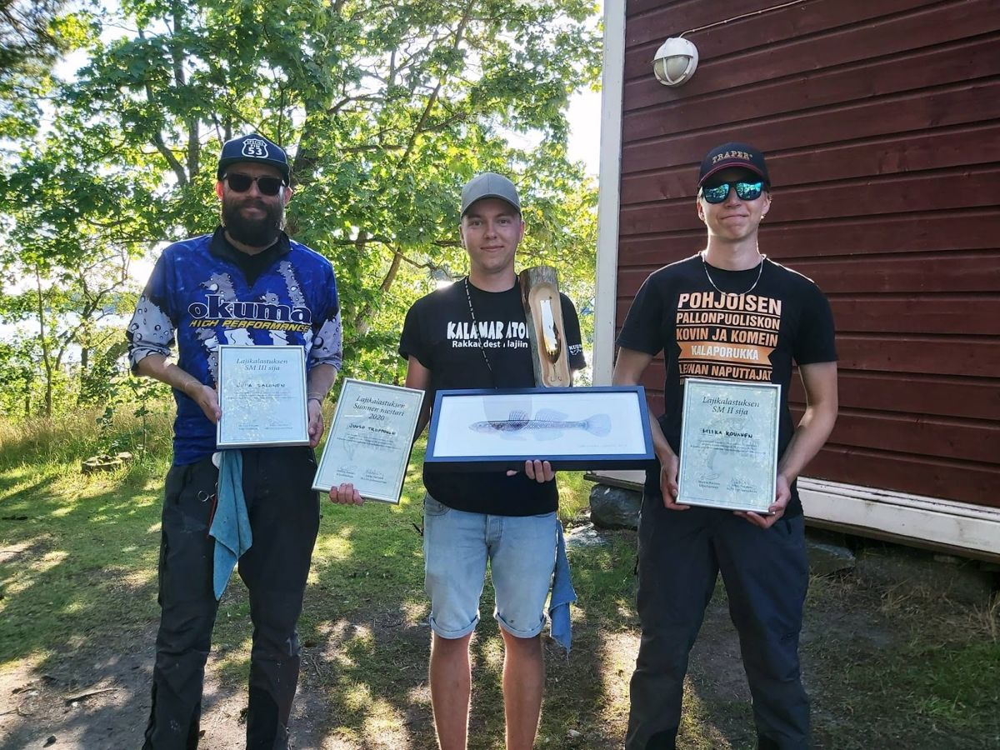
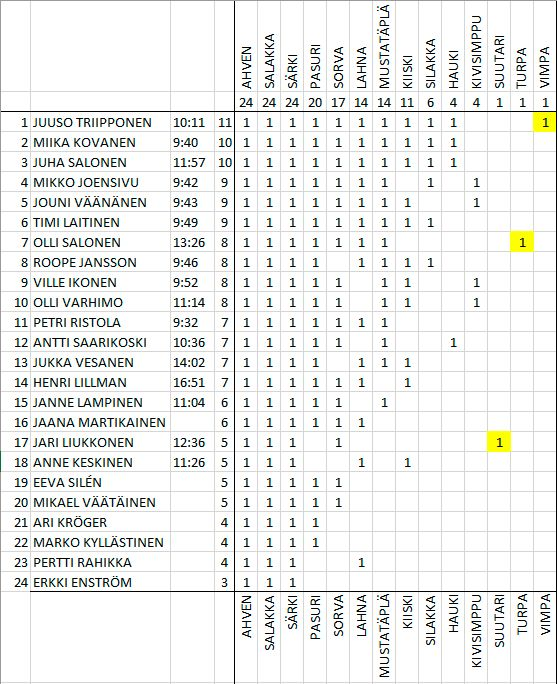
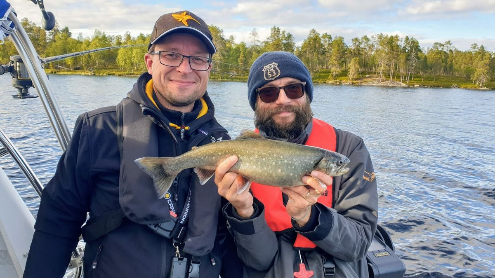
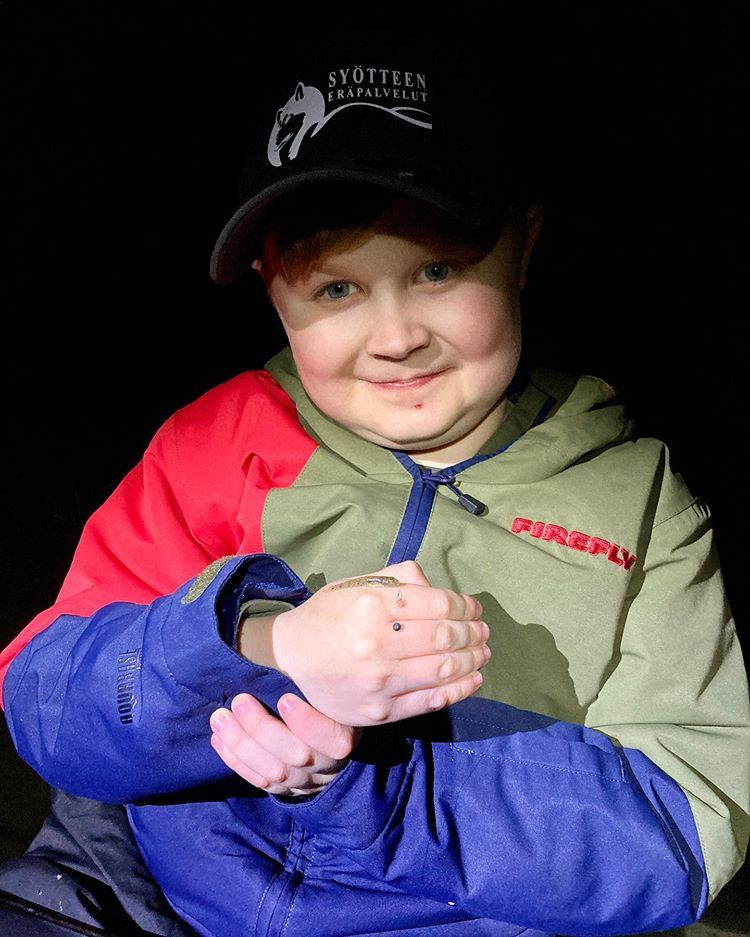

Blogitekstit · Syyskuu 2020
Elokuu - pitkänmatkan paikkoreissu

Vuoden kahdeksas kuukausi alkaa tilanteessa, missä Miikalla on 55 lajia ja minulla 54 lajia. Listalla kovaa nousua ja oman ennätyksensä parannusta tekee Juuso 51 lajilla ja tuplaplatinakerhoon halaja Mikael on lähellä tavoitettaan lajimäärän ollessa 47.


Lapin paikkoreissun lähtö on vasta 25.8. keskiviikkona ja tuo reissu tulee näyttämään pitkälti sen miten kuukausi päättyy. Rautu ja kirjoeväsimppu olisi saatava ja bonuksena ehkä harmaanieriä.
Huikea sattuma kävi kun Facebookissa minulle tuli kaveripyyntö.
Tuttuun tapaan vastasin, että tunnemmeko me toisemme kun laitoit kaveripyynnön?
Emme tunteneet, mutta katsoin hänen kaverilistaa ja yhteisiä kalakavereita oli enemmän kuin tarpeeksi. Päätin hyväksyä pyynnön.
Olen heinäkuun lapinreissulta paluusta asti yrittänyt löytää Inarinjärvelle uistelijaa, joka käyttäisi minua vesillä harmaanieriäjahdissa. Kysyin tätä myös uudelta Facebook -kaveriltani ja kuin taikaiskusta se oli siinä, tai siltä se tuntui että nyt osuin kultasuoneen.
Hänen kaverillaan on mökki järvellä, harrastaa uistelua ja voisi jopa olla potentiaalinen opas. Pyysin häntä laittamaan viestin, että soitan niin tiesi mikä tuntematon numero olisi.
Puheluuni ei vastattu. Maanantai iltana lopulta puhelimeni soi ja toiveeni kävi toteen. Mökkiläinen olisi menossa mökille samoihin aikoihin kuin me, pääsisimme majoittumaan hänen mökilleen joka sijaitsi saaressa järvellä ja voisimme uistella pari päivää hänen kyydissä harmaanieriää.
Se miten tämä reissu meni tai toteutuiko se näet tekstin lopusta.
(Kirjoitettu 9.8.)


Elokuu ehti vanheta vain reilut kahdeksan tuntia, kun toutainpiste nousi minulle Kymijoesta lajipisteeksi nro. 55. Vain muutamia tunteja myöhemmin Miika nappasi kärkipaikan itselleen Myllykosken ponnilta pyydetyllä sammella. Ilman lapin pummeja olisi 57 lajia meillä molemmilla kasassa. Tasaista menoa.
Ponnilla mukana ollut Olli Salonen sai sammen Miikan tapaan ja näin molemmat saivat elämänpisteet listalleen.


Lapissa lajimääräänsä parantelee Jere, listalle noussut jo mutu, kirjoeväsimppu sekä puronieriä. Kovaa tekemistä, kun miettii hänen kalastuksen tapahtuvan pääosin pyörätuolista tai tuolista jolle hänen isä Teemu kantaa hänet. Seuraa parivaljakon edesottamuksia Instagramissa.


Pohjoisen reissulta Juuson lajilistalle nousi kirjoeväsimppu Ropinsalmelta ja harjus Konkämäenolta. Näillä kahdella lajilla myös Juuso rikkoi vanhan ennätyksen ja jatkaa kohti uusia henkilökohtaisia ennätyksiä.
Eikä Juuson lapinreissun lajit siihen jäänyt, tutusta paikasta nousi myös rautu lajipisteeksi kivuten lajimäärässä 54 lajiin. Eikä se siihen jäänyt, heti seuraavan viikonlopun aluksi nousi Kotkasta rantanuoliainen seuraavaksi pisteeksi.


Lapissa Jere täydensi lajilistaansa raudulla ja samalla 40 lajin rajapyykki on vain viiden lajin päässä. Kyllä se saadaan raavittua pojalle kasaan vaikka väkisin! Lopulta selvisi, että kyseessä oli spleiknieriä (Salvelinus namaycush × fontinalis), puronieriän ja harmaanieriän risteymä.
Yhdessä sovittujen sääntöjen mukaan tälläistä ei fongareiden seurantaan hyväksytä, mutta upea kalalaji silti. Alla myös ote Kalamaratonin -kilpailusäännöistä.
"7. Hybridejä eli lajiristeymiä ei pääsääntöisesti lasketa lajiksi eikä kahdeksi lajiksi. Mikäli tuomaristo katsoo, ettei kilpailija ole voinut kohtuudella tunnistaa kalaa risteymäksi, on tuomaristolla mahdollisuus antaa risteymästä sen kalalajin lajipiste, minä joukkue risteymää lajikseen esittää. Mikäli joku sääntö tai sen tulkinta johtaa tuomariston yksimielisen näkemyksen mukaan kohtuuttomuuteen, voidaan tuomariston päätöksellä koska tahansa suorittaa sellaisia uudelleentulkintoja, että kohtuuttomuuksilta vältytään."-Kalamaraton kilpailusäännöt
Miika opasti Kuopiosta kotoisin olevaa Mattia Hangossa ja uutena eliksenä hänelle nousi kampela, piikkikampelat eivät olleet oppaalle suotuisia.
"En ala toistamaan viime vuoden virhettä. 3 kk aikana oli yksi 2 h aikaikkuna padvassa." -Miika
Juuso kävi Ollin kanssa Kotkassa ja nappasi samalla rantanuoliaisen lajilistalleen päästen samaan lukemaan kanssani.


Tapasimmekin Timin kanssa Juuson ja Ollin heti seuraavana aamuna Myllykosken Ponnilta siperiansampijahdista, molemmat jäätiin ilman lajipistettä tälla stopilla, saimme ainakin aurinkoa. Kirkas auringonpaiste + paahtava helle ei ole hyvä siperiansammen ongintakeli.
Olli suunniteli jo reissua pohjoiseen, 50 kerhoon pääsy kirkkaana mielessä. Enään viisi lajia...
Lajikalastuksen SM-kisat 2020


Elokuulle osui myös Helsingissä järjestettävä Lajikalastuksen SM-kilpailu. Skes ry:n tukikohtaan Honkaluotoon kokoontui toinen toistaan kovempia fongareita ja Kalamaraton tuttuja. Myös vuosiseurannan kärkikolmikko kokonaisuudessaan.
Eniten treeniä alueella oli tehnyt Miika, minä ja Juuso lähdimme kisaan lähes pystymetsästä. Reilut 27 asteen helle ja Mustikkamaan uimarannat ja ulkoilumaastot olivat saaneet ihmiset liikkeelle eikä koronan vaatimista turvaväneistä ollut tietoakaan. Tässä lähtökohdat kilpailuun.
Kovaa mentiin kisoissa, kiitos järjestäjät ja onnea Juuso toisesta voitosta. Vimman mitalla pimeällä tunnilla Miikan ohi. Miikalla ja minulla 10-lajia. Kotkan Kalamaratonista tuttu Petri Ristola toi tuomariston näytille ensimmäisenä viisi kalalajia ajassa 9:32.
"Sain 6 ekaa lajia tosi nopeasti, jonka jälkeen sorva sotki suunnitelmat. Aikaa ja kilometrejä paloi, siihen kaatui oma suoritus. Alku oli hyvä ja lopulta sorva tuli Kulosaaresta klo 15.45. Kaikenkaikkiaan hieno kilpailu taas!" -Petri
"Oli kyllä epätodellinen fiilis kun vimpa nousi lopussa. Pakko olla älyttömän tyytyväinen siihen nähden, että ehdin harjoittelemaan vain yhden illan." -Juuso
"Ne lajit onnistui mitkä olin päättänyt pyytää ja minkä pyyntiin uskoin. Silakka oli bonari laji omaan pelikirjaan. Muita bonareita ei osunut tällä erää, niiden osalta tuuri meni jo treenipäivänä." -Miika
Juuso: ahven, särki, salakka, lahna, pasuri, sorva, hauki, silakka, mtt, kiiski, vimpa*
Miika (10-lajin aika ratkaisi sijoituksen) ja minä, muuten sama lista kuin voittajalla, mutta ilman vimpaa.
Paahtava helle, väenpaljous ja kalat tekivät kisasta haasteellisen eikä suuria lajiyllätyksiä nähty. Ässiä suutari Honkaluodosta (Jari Liukkonen), vimpa (Juuso) ja turpa (Olli Salonen).
Sama lenkki itsellä kuin viime vuonna, lajilistalla silakka syrjäytti vaan kuhan ja hauki kivisimpun.
Kroppa huutaa hoosiannaa vajaan 12 km kävelystä, mutta eiköhän tästä ennen toukokuun Kotkan Kalamaratonia selvitä. Kiva oli nähdä tuttuja ja tuntemattomia, teidän takia osallistuin ja uskon, että niin moni muukin.
Pysytään kaikki terveinä ja pidetään siimat kireinä. Peukut pystyyn Juusolle, että siperiansampi napsahtaa voiton jatkoksi ponnilta.


Ps. Noin 2 tuntia 19 min. meni siirtymiin yhteensä aikaa.
Paikkoreissu pohjoiseen - uusia tuttavuuksia


Elokuun loppupuoli alkoi retkellä pohjoiseen. Matkalla Inarinjärvelle oli yksi yö mahdollista lirkkiä kirjoeväsimppua Kylmäluoman alueelta. Pohjatietona oli, että E63 varrella olevien järvien kivikkorannoilla lajia esiintyisi. Tämän olivat selvittäneet Mikael ja Sakke Yrjölä oman lapin tutkimusretken paluumatkalla.
Kamat mökkiin Kylmäluoman retkeilyalueella ja rantaan. Ensimmäiset kolme tienpenkkaa ei tulosta tuonut, mutta kolmannella heti ensimmäisestä kivenkolosta nousi made ja seuraavasta kolosta kirjoeväsimppu. Yllätys sinäänsä, että kalastus tapahtui rankassa sateessa pipopäässä.
Inarinjärvelle pääsin uistelemaan Normarkin pohjoisen myyntiedustaja Jarkko Helkomaan kanssa. Tavoitteena oli yrittää harmaanieriää ja siinä sivussa toivoa rautua saaliiksi. Rautu tuli sekä pari komeaa taimenta, ei tarvinnut käydä Karigasniemellä tai Utsjoella pieniä rautuja pyytämässä.
Saman päivän yönä Miika nappasi Padvasta piikkikampelan kammeten itsensä myös 57 lajimäärään.


Jere onnistui nappaamaan Vaasan rannalta. Täysin tyyni ilta siivitti Jeren ja hänen isäntä merenrantaan ja tällä kertaa onnistuminen tuli. Hietatokkoja oli liikkeellä paljon ja Jeren uusi elämänpiste nro. 36 sekä tämän vuoden kalalaji nro. 36 nousi lajilistalle. Tällä kertaa oli kastunut vain toinen kenkä.
Ota Jeren Instatili seurantaan tästä.
121 päivää vuotta jäljellä, mitähän tässä vielä keksitään?
Seuraa ennätyksen etenemistä
Pidän kirjaa lajilistasta ja tarkemmasta retkidatasta Google -taulukossa, joka löytyy jokaisesta ennätysyrityksen postauksesta.
Tästä linkistä taulukko avautuu uuteen ikkunaan.
Seurantatilanne löytyy myös blogini oikeasta yläreunasta.
Vuoden aikana ennätysyrityksessä kulkee mukaan myös tämä kalataitelija-graaffikko Sakke Yrjölän suunnittelema SPECIES FIN 53 -merkki.
Paitakulmassa painatin pipoon ja lippikseen saman merkin. Tavoitteeni on saada aikaiseksi 53 saaliskuvaa tekstin alussa tekemääni taulukkoon joissa kaikissa kuvissa näkyisi tuo kyseinen tunnus.
Paitakulma on Suomalainen perheyritys, joka haluaa panostaa laatuun ja asiakastyytyväisyyteen. Tutustu yrityksen palveluihin tästä.